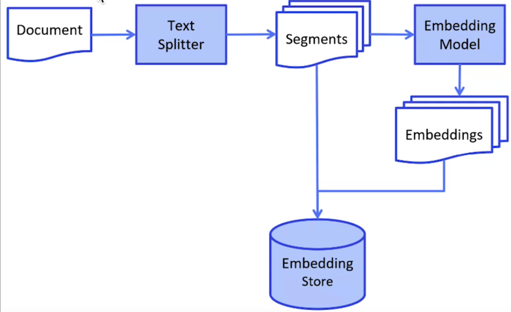
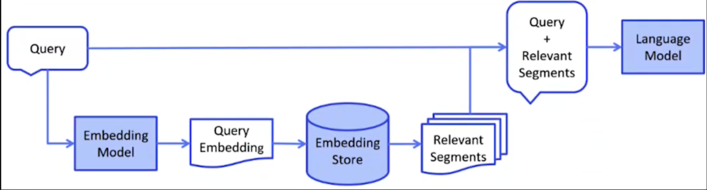

RAG实战
通过美团的页面进行测试，问大模型对于退款业务，如果没有rag模型，直接问他关于退款
from langchain_openai import ChatOpenAI
from config.load_key import load_key
import os
if not os.environ.get("OPENAI_API_KEY"):
os.environ["OPENAI_API_KEY"] = load_key("OPENAI_API_KEY")
chat = ChatOpenAI(
model="gpt-4.1-nano",
base_url="https://api.chatanywhere.tech/v1",
max_retries=3,
streaming=True,
verbose=True
)
chat.invoke("如何退款？")
AIMessage(content='您好！关于退款，您可以按照以下步骤操作，具体流程可能会因平台或购买渠道而有所不同：\n\n1. 进入支付平台或购买平台的官网或App。\n2. 登录您的账号。\n3. 找到“订单”或“购买记录”页面。\n4. 选择需要退款的订单。\n5. 点击“申请退款”或“退款”按钮。\n6. 按照提示填写退款原因，并提交申请。\n7. 等待平台审核并处理退款。\n\n如果是通过第三方支付（如支付宝、微信支付）支付的，您也可以在相应的支付平台中找到交易记录，申请退款。\n\n建议您查看购买时的退款政策，确认符合退款条件。如果遇到问题，可以联系平台的客服获取帮助。\n\n如果您提供具体的购买渠道或平台，我可以提供更详细的指导！', additional_kwargs={}, response_metadata={'finish_reason': 'stop', 'model_name': 'gpt-4.1-nano-2025-04-14', 'system_fingerprint': 'fp_38343a2f8f'}, id='run--2b2d9423-553f-4592-a649-c463a78d1774-0')
跟美团一点关系没有
RAG的基础工作一般分为两个阶段，Indexing索引阶段和Retriever检索阶段
- 索引阶段
这一阶段主要是对相关文档进行处理，形成知识库，便于后续检索，通常需要将各种形式的文档转换为Document，然后将Document转化为Segements，然后将这些Segements进行Embendding向量化处理，并将结果存到向量数据库中，这样后续的结果就可以直接在向量数据库中检索了

- 检索阶段
这一阶段是检索向量数据库，找到对应的segments，然后将用户的问题和segements拼接在一起，发送给大模型，然后大模型对信息进行整合。

我们可以定制一个prompt模版
prompt = “你是一个问答机器人，你的任务是根据下述给定的已知信息回答用户问题。已知信息：{context},就是检索出来的文档信息，用户问 {question},就是用户的问题，如果已知信息不包含用户的问题，或者无法回答用户的问题，请直接回复：我无法回答您的问题”，不要输出已知信息中不包含的信息，请用中文回答用户
第一步，索引阶段：加载文档数据
from langchain_community.document_loaders import TextLoader
loader = TextLoader("./resources/meituan-questions.txt")
docs = loader.load()
docs
[Document(metadata={'source': './resources/meituan-questions.txt'}, page_content='以下是美团外卖常见问题页面主要内容整理成的txt格式文本：\n\n美团外卖常见问题\n\n【在线支付问题】 \nQ：在线支付取消订单后钱怎么返还？ \n订单取消后，款项会在一个工作日内，直接返还到您的美团账户余额。\n\nQ：怎么查看退款是否成功？ \n退款会在一个工作日之内到美团账户余额，可在“账号管理——我的账号”中查看是否到账。\n\nQ：美团账户里的余额怎么提现？ \n余额可到美团网（meituan.com）——“我的美团→美团余额”里提取到您的银行卡或者支付宝账号，余额也可直接用于支付外卖订单（限支持在线支付的商家）。\n\nQ：余额提现到账时间是多久？ \n1-7个工作日内可退回您的支付账户。具体到账时间以银行处理时间为准。\n\nQ：申请退款后，商家拒绝了怎么办？ \n申请退款后，如果商家拒绝，点击订单页面“退款申诉”，美团客服介入处理。\n\nQ：怎么取消退款呢？ \n在订单页点击“不退款了”，商家还会正常送餐。\n\nQ：未付款的在线支付订单取消，是否影响活动次数？ \n不会，未支付订单取消后，您仍可享受活动优惠。\n\nQ：微信订餐为何无法使用在线支付？ \n仅网页版和美团外卖手机App支持在线支付。\n\nQ：美团外卖支持哪些支付方式？ \n美团余额、支付宝、网银（储蓄卡、信用卡）。\n\nQ：在线支付订单如何退款？ \n商家接单前可直接取消并退款到美团余额；接单后申请退款，商家24小时内处理，处理后退款到美团余额。\n\nQ：支付显示未成功，款项被扣怎么办？ \n可能数据未即时传输，稍后刷新页面查看；半小时后仍未收到款项，联系银行/支付宝客服，获取交易号，再联系美团客服解决。\n\n【优惠问题】 \nQ：哪些商家有优惠？ \n商家列表页含有优惠标识。\n\nQ：新用户优惠条件？ \n首次在美团外卖下单用户（同设备、手机号、账户仅享一次）。\n\nQ：满赠、满减优惠为何未享受？ \n优惠以菜品总额计算，不包含配送费与包装费。\n\nQ：超时赔付是什么意思？ \n商家承诺送达时间和折扣，超时送达按折扣价收费，不包含预订单及某些特殊情况。\n\n【订单问题】 \nQ：为何提示“账户存在异常，无法下单”？ \n有虚假交易或恶意下单行为，系统自动封禁。\n\nQ：如何取消订单？ \n商家未接单可在订单详情页取消，已接单需联系商家取消。\n\nQ：订单为何被取消？ \n商家超时未接单或无法配送，如联系不上您或菜品售完。\n\nQ：如何催单？ \n订单页面点击“电话催单”。\n\nQ：信息填错如何处理？ \n商家未接单可取消，已接单联系商家取消再重下单。\n\nQ：如何确认订单被商家确认？ \nApp推送通知，订单状态实时更新；微信及触屏版需刷新订单页查看。\n\nQ：预计送达时间与实际不符？ \n预计时间为系统综合计算，仅供参考，实际受天气及订单量影响。\n\nQ：无法下单原因？ \n可能菜品售完、餐厅未营业等，查看系统提示。\n\nQ：下单次数限制？ \n同一手机号同一设备每天最多成功提交7次订单。\n\n【其他问题】 \nQ：如何投诉商家服务？ \n订单完成评价后点击意见反馈或拨打客服电话400-850-7777投诉。\n\nQ：如何联系客服？ \n拨打客服电话400-850-7777或在“我的”→“意见反馈”提交。\n\nQ：手机客户端无法定位？ \n检查网络及定位权限，尝试户外或wifi环境定位。\n\nQ：如何修改账户信息？ \n美团账号在“我的”页面修改，也可在美团网账号页面修改。\n\nQ：为何有时需要输入短信验证码？ \n保障账号安全，新用户或异常行为提示输入。未收到短信可选择语音验证码。')]
在langchain中，有很多的loader可以加载不同格式的文档，如果文件夹中有很多文件，可以使用DirectoryLoader来加载
from langchain_community.document_loaders import DirectoryLoader
loader = DirectoryLoader(
"./resources",
glob="*.txt",
loader_cls=TextLoader
)
loader.load()第二步，拆分文档，形成所需要的格式
from langchain.text_splitter import CharacterTextSplitter
text_splitter = CharacterTextSplitter(
chunk_size=500,
chunk_overlap=0,
separator="\n\n",
keep_separator=True
)
segments = text_splitter.split_documents(docs)
print(len(segments))
for sement in segments:
print(sement.page_content)
print("===" * 20)
# 以下为结果
3
以下是美团外卖常见问题页面主要内容整理成的txt格式文本：
美团外卖常见问题
【在线支付问题】
Q：在线支付取消订单后钱怎么返还？
订单取消后，款项会在一个工作日内，直接返还到您的美团账户余额。
Q：怎么查看退款是否成功？
退款会在一个工作日之内到美团账户余额，可在“账号管理——我的账号”中查看是否到账。
Q：美团账户里的余额怎么提现？
余额可到美团网（meituan.com）——“我的美团→美团余额”里提取到您的银行卡或者支付宝账号，余额也可直接用于支付外卖订单（限支持在线支付的商家）。
Q：余额提现到账时间是多久？
1-7个工作日内可退回您的支付账户。具体到账时间以银行处理时间为准。
Q：申请退款后，商家拒绝了怎么办？
申请退款后，如果商家拒绝，点击订单页面“退款申诉”，美团客服介入处理。
Q：怎么取消退款呢？
在订单页点击“不退款了”，商家还会正常送餐。
Q：未付款的在线支付订单取消，是否影响活动次数？
不会，未支付订单取消后，您仍可享受活动优惠。
Q：微信订餐为何无法使用在线支付？
仅网页版和美团外卖手机App支持在线支付。
============================================================
Q：美团外卖支持哪些支付方式？
美团余额、支付宝、网银（储蓄卡、信用卡）。
Q：在线支付订单如何退款？
商家接单前可直接取消并退款到美团余额；接单后申请退款，商家24小时内处理，处理后退款到美团余额。
Q：支付显示未成功，款项被扣怎么办？
可能数据未即时传输，稍后刷新页面查看；半小时后仍未收到款项，联系银行/支付宝客服，获取交易号，再联系美团客服解决。
【优惠问题】
Q：哪些商家有优惠？
商家列表页含有优惠标识。
Q：新用户优惠条件？
首次在美团外卖下单用户（同设备、手机号、账户仅享一次）。
Q：满赠、满减优惠为何未享受？
优惠以菜品总额计算，不包含配送费与包装费。
Q：超时赔付是什么意思？
商家承诺送达时间和折扣，超时送达按折扣价收费，不包含预订单及某些特殊情况。
【订单问题】
Q：为何提示“账户存在异常，无法下单”？
有虚假交易或恶意下单行为，系统自动封禁。
Q：如何取消订单？
商家未接单可在订单详情页取消，已接单需联系商家取消。
Q：订单为何被取消？
商家超时未接单或无法配送，如联系不上您或菜品售完。
============================================================
Q：如何催单？
订单页面点击“电话催单”。
Q：信息填错如何处理？
商家未接单可取消，已接单联系商家取消再重下单。
Q：如何确认订单被商家确认？
App推送通知，订单状态实时更新；微信及触屏版需刷新订单页查看。
Q：预计送达时间与实际不符？
预计时间为系统综合计算，仅供参考，实际受天气及订单量影响。
Q：无法下单原因？
可能菜品售完、餐厅未营业等，查看系统提示。
Q：下单次数限制？
同一手机号同一设备每天最多成功提交7次订单。
【其他问题】
Q：如何投诉商家服务？
订单完成评价后点击意见反馈或拨打客服电话400-850-7777投诉。
Q：如何联系客服？
拨打客服电话400-850-7777或在“我的”→“意见反馈”提交。
Q：手机客户端无法定位？
检查网络及定位权限，尝试户外或wifi环境定位。
Q：如何修改账户信息？
美团账号在“我的”页面修改，也可在美团网账号页面修改。
Q：为何有时需要输入短信验证码？
保障账号安全，新用户或异常行为提示输入。未收到短信可选择语音验证码。
============================================================
# 严格的按照正则表达式来拆分
import re
texts = re.split(r"\n\n",docs[0].page_content)
segments = text_splitter.split_text(docs[0].page_content)
segments_doc = text_splitter.create_documents(texts)
print(len(segments_doc))
for sement in segments_doc:
print(sement.page_content)
print("===" * 20)
# 以下为结果
31
以下是美团外卖常见问题页面主要内容整理成的txt格式文本：
============================================================
美团外卖常见问题
============================================================
【在线支付问题】
Q：在线支付取消订单后钱怎么返还？
订单取消后，款项会在一个工作日内，直接返还到您的美团账户余额。
============================================================
Q：怎么查看退款是否成功？
退款会在一个工作日之内到美团账户余额，可在“账号管理——我的账号”中查看是否到账。
============================================================
Q：美团账户里的余额怎么提现？
余额可到美团网（meituan.com）——“我的美团→美团余额”里提取到您的银行卡或者支付宝账号，余额也可直接用于支付外卖订单（限支持在线支付的商家）。
============================================================
Q：余额提现到账时间是多久？
1-7个工作日内可退回您的支付账户。具体到账时间以银行处理时间为准。
============================================================
Q：申请退款后，商家拒绝了怎么办？
申请退款后，如果商家拒绝，点击订单页面“退款申诉”，美团客服介入处理。
============================================================
Q：怎么取消退款呢？
在订单页点击“不退款了”，商家还会正常送餐。
============================================================
Q：未付款的在线支付订单取消，是否影响活动次数？
不会，未支付订单取消后，您仍可享受活动优惠。
============================================================
Q：微信订餐为何无法使用在线支付？
仅网页版和美团外卖手机App支持在线支付。
============================================================
Q：美团外卖支持哪些支付方式？
美团余额、支付宝、网银（储蓄卡、信用卡）。
============================================================
Q：在线支付订单如何退款？
商家接单前可直接取消并退款到美团余额；接单后申请退款，商家24小时内处理，处理后退款到美团余额。
============================================================
Q：支付显示未成功，款项被扣怎么办？
可能数据未即时传输，稍后刷新页面查看；半小时后仍未收到款项，联系银行/支付宝客服，获取交易号，再联系美团客服解决。
============================================================
【优惠问题】
Q：哪些商家有优惠？
商家列表页含有优惠标识。
============================================================
Q：新用户优惠条件？
首次在美团外卖下单用户（同设备、手机号、账户仅享一次）。
============================================================
Q：满赠、满减优惠为何未享受？
优惠以菜品总额计算，不包含配送费与包装费。
============================================================
Q：超时赔付是什么意思？
商家承诺送达时间和折扣，超时送达按折扣价收费，不包含预订单及某些特殊情况。
============================================================
【订单问题】
Q：为何提示“账户存在异常，无法下单”？
有虚假交易或恶意下单行为，系统自动封禁。
============================================================
Q：如何取消订单？
商家未接单可在订单详情页取消，已接单需联系商家取消。
============================================================
Q：订单为何被取消？
商家超时未接单或无法配送，如联系不上您或菜品售完。
============================================================
Q：如何催单？
订单页面点击“电话催单”。
============================================================
Q：信息填错如何处理？
商家未接单可取消，已接单联系商家取消再重下单。
============================================================
Q：如何确认订单被商家确认？
App推送通知，订单状态实时更新；微信及触屏版需刷新订单页查看。
============================================================
Q：预计送达时间与实际不符？
预计时间为系统综合计算，仅供参考，实际受天气及订单量影响。
============================================================
Q：无法下单原因？
可能菜品售完、餐厅未营业等，查看系统提示。
============================================================
Q：下单次数限制？
同一手机号同一设备每天最多成功提交7次订单。
============================================================
【其他问题】
Q：如何投诉商家服务？
订单完成评价后点击意见反馈或拨打客服电话400-850-7777投诉。
============================================================
Q：如何联系客服？
拨打客服电话400-850-7777或在“我的”→“意见反馈”提交。
============================================================
Q：手机客户端无法定位？
检查网络及定位权限，尝试户外或wifi环境定位。
============================================================
Q：如何修改账户信息？
美团账号在“我的”页面修改，也可在美团网账号页面修改。
============================================================
Q：为何有时需要输入短信验证码？
保障账号安全，新用户或异常行为提示输入。未收到短信可选择语音验证码。
============================================================
第三步，将文本向量化并存入向量数据库中
from langchain_community.embeddings import OpenAIEmbeddings
embeddings = OpenAIEmbeddings(
model="text-embedding-3-small",
base_url="https://api.chatanywhere.tech/v1",
max_retries=3,
verbose=True
)
# 存入向量数据库中
import redis
redis_url = "redis://localhost:6379/0"
from langchain_redis import RedisConfig,RedisVectorStore
redis_config = RedisConfig(index_name="meituan_questions",
redis_url=redis_url)
redis_vector = RedisVectorStore(
redis_config=redis_config,
embeddings=embeddings
)
redis_vector.add_documents(segments_doc)第四步，以上完成了索引阶段，之后就是检索增强阶段
query = "在线支付取消订单后钱怎么返还"
retriever = redis_vector.as_retriever()
retriever_segments = retriever.invoke(query,k=5)
retriever_segments
# 以下为结果
[Document(metadata={}, page_content='【在线支付问题】 \nQ：在线支付取消订单后钱怎么返还？ \n订单取消后，款项会在一个工作日内，直接返还到您的美团账户余额。'),
Document(metadata={}, page_content='Q：怎么取消退款呢？ \n在订单页点击“不退款了”，商家还会正常送餐。'),
Document(metadata={}, page_content='Q：在线支付订单如何退款？ \n商家接单前可直接取消并退款到美团余额；接单后申请退款，商家24小时内处理，处理后退款到美团余额。'),
Document(metadata={}, page_content='Q：如何取消订单？ \n商家未接单可在订单详情页取消，已接单需联系商家取消。'),
Document(metadata={}, page_content='Q：未付款的在线支付订单取消，是否影响活动次数？ \n不会，未支付订单取消后，您仍可享受活动优惠。')]
第五步，构建提示词
from langchain.prompts import ChatPromptTemplate
template = ChatPromptTemplate.from_messages([
"user", """
你是一个答疑机器人，请根据已有信息回答用户的问题。
用户问题：{question}
已有信息：{context}
如果已有信息中不包含用户问题的答案，请回答“抱歉，我无法回答这个问题。
请不要输出与已有信息无关的信息，请用中文回答用户问题”。
"""
])
text = []
for segment in retriever_segments:
text.append(segment.page_content)
template = template.invoke({"context": text, "question": query})
template
# 以下为结果
ChatPromptValue(messages=[HumanMessage(content='user', additional_kwargs={}, response_metadata={}), HumanMessage(content="\n 你是一个答疑机器人，请根据已有信息回答用户的问题。\n 用户问题：在线支付取消订单后钱怎么返还\n 已有信息：['【在线支付问题】 \\nQ：在线支付取消订单后钱怎么返还？ \\n订单取消后，款项会在一个工作日内，直接返还到您的美团账户余额。', 'Q：怎么取消退款呢？ \\n在订单页点击“不退款了”，商家还会正常送餐。', 'Q：在线支付订单如何退款？ \\n商家接单前可直接取消并退款到美团余额；接单后申请退款，商家24小时内处理，处理后退款到美团余额。', 'Q：如何取消订单？ \\n商家未接单可在订单详情页取消，已接单需联系商家取消。', 'Q：未付款的在线支付订单取消，是否影响活动次数？ \\n不会，未支付订单取消后，您仍可享受活动优惠。']\n 如果已有信息中不包含用户问题的答案，请回答“抱歉，我无法回答这个问题。\n 请不要输出与已有信息无关的信息，请用中文回答用户问题”。\n ", additional_kwargs={}, response_metadata={})])
第六步，调用大语言模型
from langchain_openai import ChatOpenAI
llm = ChatOpenAI(
model="gpt-4.1-nano",
base_url="https://api.chatanywhere.tech/v1",
max_retries=3,
streaming=True,
verbose=True
)
result = llm.invoke(template)
result.content
# 以下为结果
'订单取消后，款项会在一个工作日内，直接返还到您的美团账户余额。'
第七步，生成链式
# 全流程整合
from langchain_core.output_parsers import StrOutputParser
query = "在线支付订单如何退款"
from langchain_community.embeddings import OpenAIEmbeddings
from config.load_key import load_key
import os
if not os.environ.get("OPENAI_API_KEY"):
os.environ["OPENAI_API_KEY"] = load_key("OPENAI_API_KEY")
embeddings = OpenAIEmbeddings(
model="text-embedding-3-small",
base_url="https://api.chatanywhere.tech/v1"
)
from langchain_redis import RedisConfig, RedisVectorStore
redis_url = "redis://localhost:6379/0"
redis_config = RedisConfig(index_name="meituan_questions",
redis_url=redis_url)
redis_vector = RedisVectorStore(
redis_config=redis_config,
embeddings=embeddings
)
# redis_vector.add_documents(segments_doc)
retriever = redis_vector.as_retriever()
docs = retriever.get_relevant_documents(query)
print(f"检索结果数量：{len(docs)}")
from langchain_openai import ChatOpenAI
llm = ChatOpenAI(
model="gpt-4.1-nano",
base_url="https://api.chatanywhere.tech/v1",
api_key = load_key("OPENAI_API_KEY")
)
from langchain_core.prompts import ChatPromptTemplate
prompt_template = ChatPromptTemplate.from_messages([
"user", """
你是一个答疑机器人，请根据已有信息回答用户的问题。
用户问题：{question}
已有信息：{context}
如果已有信息中不包含用户问题的答案，请回答“抱歉，我无法回答这个问题。
请不要输出与已有信息无关的信息，请用中文回答用户问题”。
"""
])
def collect_text(segments):
text = []
for segment in segments:
text.append(segment.page_content)
return text
from operator import itemgetter
chain = ({
"context":itemgetter("question") | retriever | collect_text,
"question":itemgetter("question")
}
| prompt_template
| llm
| StrOutputParser()
)
response = chain.invoke({"question": query})
responseRAG系统质量验证笔记
一、什么是RAG系统
- RAG（Retrieval-Augmented Generation）：结合检索和生成模型的系统。先从大量文本库检索相关上下文，再基于上下文生成回答。
- 目的是解决纯生成模型“凭空编造”问题，提高回答准确性和可信度。
二、RAG关键评估指标简介
1. 召回率（Recall）
- 定义：系统成功检索到的相关文档占所有相关文档的比例。
- 公式：
Recall = （检索到的相关文档数量 ∩ 所有相关文档数量） ÷（所有相关文档数量）
- 意义：衡量系统是否遗漏重要信息。召回越高，相关内容覆盖越全面。
2. 精确率（Precision）
- 定义：系统检索出的文档中真正相关的比例。
- 公式：
Precision = （检索到的相关文档数量 ∩ 检索出的文档数量） ÷（检索出的文档总数）
- 意义：衡量系统返回结果的纯度，精确率越高，错误文档越少。
3. F1评分
- 定义：精确率和召回率的调和平均数，平衡二者关系。
- 公式：
F1 = 2 × (Precision × Recall) ÷ (Precision + Recall)
- 意义：综合反映系统检索的准确性和覆盖度。
三、RAG系统评估步骤
1. 数据准备
- 获取包含问题和相关上下文（文档）对的数据集。
- 人工标注哪些文档是真正相关的“黄金标准”。
2. 检索性能评估
- 根据查询，系统从文档库里检索若干相关文档。
- 计算召回率、精确率、F1评分。
- 重点关注召回率，评估系统是否能找到足够多的相关内容支持答案生成。
3. 生成性能评估
- 基于检索到的上下文，生成回答文本。
- 通过人工打分或自动评估（如BLEU、ROUGE等）评价回答的正确性、完整性和相关性。
- 还可以采用基于LLM的忠实度评价（如RAGAS系统），评估生成内容是否真实基于检索上下文。
四、RAGAS系统简介
- RAGAS：一个专门针对RAG系统的综合评估框架。
- 包含四大指标轮廓：
- Context Relevancy（上下文相关性）：检索出的上下文是否与查询匹配。
- Context Recall（上下文召回率）：检索上下文能覆盖多少查询相关信息。
- Faithfulness（忠实性）：回答是否忠实于检索到的上下文，避免虚构。
- Answer Relevancy（回答相关性）：生成的回答是否与查询主题相关。
五、示例计算
假设一个查询：
- 正确相关文档总数为5
- 系统检索出文档8篇，其中包含4篇相关文档
计算：
- 召回率 = 4 / 5 = 0.8
- 精确率 = 4 / 8 = 0.5
- F1 = 2 × (0.8 × 0.5) / (0.8 + 0.5) ≈ 0.615
六、小结
- 召回率衡量检索到的全面性，防止遗漏重要信息。
- 精确率衡量检索内容的纯度，避免无关文档过多。
- F1评分综合权衡精确率和召回率，是评估检索性能核心指标。
- RAG系统除了检索效果，还必须对生成回答的忠实度和相关性进行评估，推荐结合RAGAS或基于LLM的自动评测。
- 评估是一个多维度过程，检索正确但生成错误、生成好但检索差，都会影响系统整体表现，需综合分析。
def calculate_metrics(retrieved_docs, relevant_docs):
# 计算交集：检索到的相关文档数量
retrieved_relevant = set(retrieved_docs) & set(relevant_docs)
num_retrieved_relevant = len(retrieved_relevant)
# 召回率 = 检索到的相关文档数 / 所有相关文档数
recall = num_retrieved_relevant / len(relevant_docs) if relevant_docs else 0
# 精确率 = 检索到的相关文档数 / 检索出的文档总数
precision = num_retrieved_relevant / len(retrieved_docs) if retrieved_docs else 0
# F1评分 = 2 * (precision * recall) / (precision + recall)
if precision + recall == 0:
f1 = 0
else:
f1 = 2 * (precision * recall) / (precision + recall)
return precision, recall, f1
# 测试示例
relevant_documents = ['doc1', 'doc2', 'doc3', 'doc4', 'doc5'] # 人工标注的相关文档
retrieved_documents = ['doc2', 'doc3', 'doc6', 'doc7', 'doc8', 'doc9', 'doc10', 'doc1'] # 系统检索出的文档
precision, recall, f1 = calculate_metrics(retrieved_documents, relevant_documents)
print(f"Precision: {precision:.3f}")
print(f"Recall: {recall:.3f}")
print(f"F1 Score: {f1:.3f}")
如何提升RAG回答的质量
提升RAG（Retrieval-Augmented Generation）系统回答质量，需要从多个维度综合优化，以下详细说明各个关键点：
1. 检索知识库质量提升
- 高质量文档内容
- 知识库的完整性与更新
- 向量嵌入模型选择与微调
- 检索策略与参数调整
2. Prompt设计与上下文管理
- 结构化上下文输入
- 明确生成指令
- 动态Prompt优化
3. 生成模型调优
- 模型选择
- 微调与参数设置
- 多样本和多轮生成
4. 多轮交互与用户反馈
- 用户反馈收集
- 对话上下文延续
- 主动澄清与纠正
5. 评估与监控
- 多维评估指标
- 自动与人工评估结合
- 数据分析与监控仪表盘
6. 系统与架构优化
- 知识库增量更新
- 多模态支持
- 分层检索与融合
- 缓存与负载均衡
7. 先进技术应用
- 事实校验（Fact-checking）模块
- 排名优化（Ranking APIs）
- 自我反思与增强（Self-RAG）
总结
提升RAG回答质量是一个综合工程，需要围绕知识库、检索、生成、交互和评估多方面协同优化。通过高质量知识库构建、精准检索、有效Prompt设计、合适模型调优、持续反馈迭代和系统架构保障，打造既准确又可信的智能问答系统。